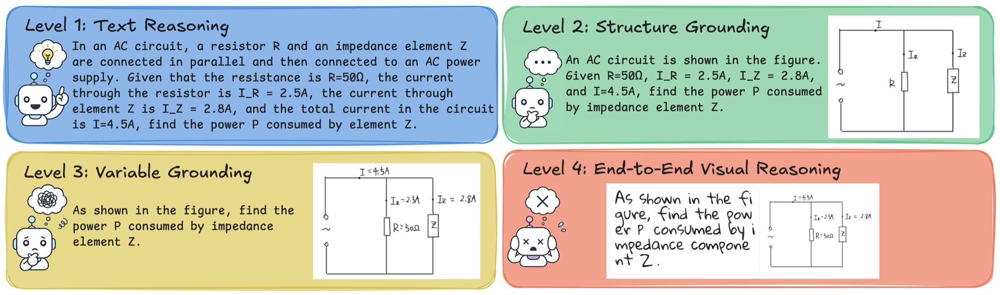
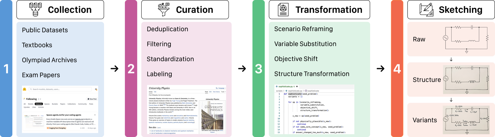
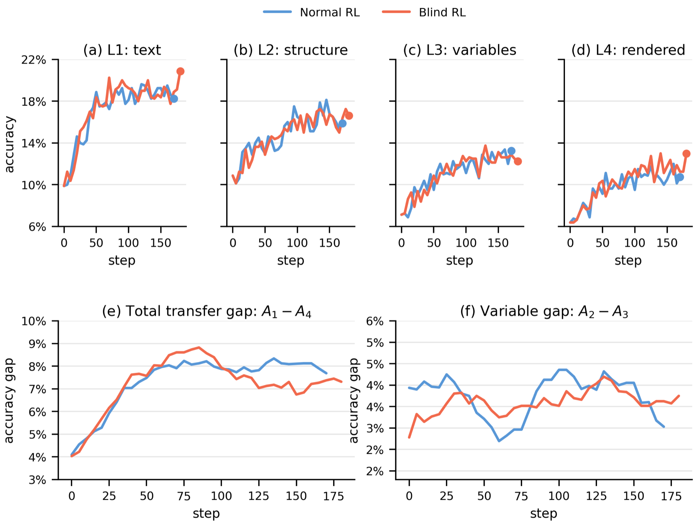
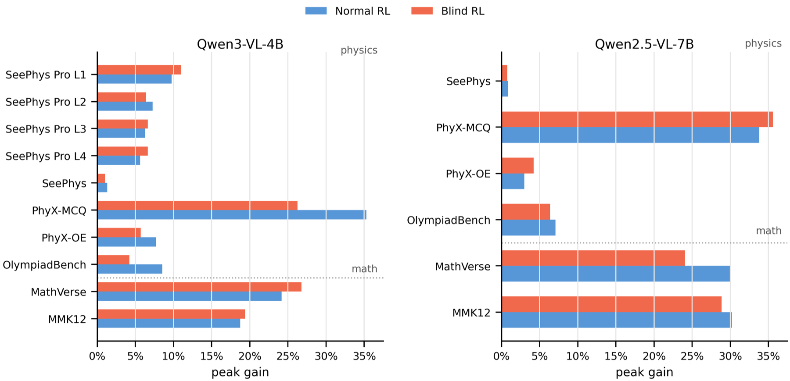

NeurIPS 2026 Evaluations & Datasets Track
SeePhys Pro
Diagnosing Modality Transfer and Blind-Training Effects in Multimodal RLVR for Physics Reasoning
SeePhys Pro is a fine-grained modality-transfer benchmark for multimodal physics reasoning. Each problem preserves the same physical semantics while progressively moving task-critical information from text into diagrams, revealing whether a model reasons over stable physics or over the surface form of the prompt.
Benchmark Design
The benchmark is built on the principle of same physics, different representation. Four aligned levels decompose the cost of structural transfer, visual variable grounding, and full image rendering.

Data Construction
Seed problems are curated from public datasets, textbooks, exam papers, olympiad archives, and physics problem books, then manually transformed into aligned multimodal variants with preserved answers and solution paths.

- Source-matched: benchmark and training corpora share a broad physics source pool but remain instance-disjoint.
- Manually aligned: annotators redraw structure and variable layers while preserving the physical system.
- Fine-grained metadata: discipline, field, domain, visual evidence type, and reasoning skill annotations support targeted analysis.
Test-Time Modality Transfer
Across evaluated models, average accuracy drops from 49.2% at Level 1 to 35.8% at Level 4. The largest average gap occurs at Level 2 to Level 3, where models must ground variables and labels from images.
| Model | Accuracy / consistency | Transfer gap | |||||||
|---|---|---|---|---|---|---|---|---|---|
| L1 | L2 | L3 | L4 | Cons4 ↑ | ΔS ↓ | ΔV ↓ | ΔR ↓ | ΔT ↓ | |
| Human Performance | 54.0 | 58.5 | 59.5 | 56.0 | 49.0 | -4.5 | -1.0 | 3.5 | -2.0 |
| GPT-5.4 | 67.4 | 64.1 | 55.8 | 53.0 | 32.6 | 3.3 | 8.3 | 2.8 | 14.4 |
| GPT-5 | 41.8 | 32.9 | 23.8 | 23.2 | 8.9 | 8.9 | 9.1 | 0.5 | 18.5 |
| Gemini-3.1-Pro | 71.0 | 72.0 | 66.5 | 66.5 | 47.0 | -1.0 | 5.5 | 0.0 | 4.5 |
| Claude-4.7-Opus | 74.0 | 67.0 | 56.5 | 46.5 | 33.5 | 7.0 | 10.5 | 10.0 | 27.5 |
| Qwen-3.6-flash | 61.4 | 59.3 | 49.9 | 48.4 | 29.9 | 2.1 | 9.4 | 1.5 | 13.0 |
| Qwen3.5-27B | 45.0 | 34.8 | 28.0 | 25.6 | 9.9 | 10.3 | 6.8 | 2.4 | 19.4 |
| Gemma-4-31B-it | 38.9 | 33.5 | 23.9 | 22.0 | 8.9 | 5.4 | 9.6 | 1.9 | 16.9 |
| Average | 49.2 | 46.1 | 38.7 | 35.8 | 21.4 | 3.0 | 7.4 | 2.9 | 13.4 |
Accuracy and consistency are percentages. Positive transfer gaps indicate degradation under a more visual representation; ΔV measures the variable-grounding gap from Level 2 to Level 3.
Training-Time Diagnostic
SeePhys Pro also tests whether multimodal RLVR improvements are visually grounded. A blind-training control masks all training images, yet still improves unmasked validation accuracy, showing that final-answer gains alone can overstate visual grounding.

Cross-Benchmark Controls
Blind gains are not unique to SeePhys Pro. Across external physics and math benchmarks, masked-image RL can recover a substantial fraction of normal RL gains, indicating sensitivity to residual textual and distributional cues.

Citation
@article{xiang2026seephyspro,
title = {SeePhys Pro: Diagnosing Modality Transfer and Blind-Training Effects in Multimodal RLVR for Physics Reasoning},
author = {Xiang, Kun and Zhang, Terry Jingchen and Liu, Zirong and Zhou, Bokai and Tang, Yueling and Yu, Junjie and Lu, Jiacong and Huang, Shangrui and Li, Heng and Zhang, Likui and Liu, Kunkun and Zhang, Changzheng and Fang, Yangle and Guo, Boqiang and Zhen, Hui-Ling and Tu, Dandan and Huang, Yinya and Liang, Xiaodan},
journal = {arXiv},
year = {2026}
}